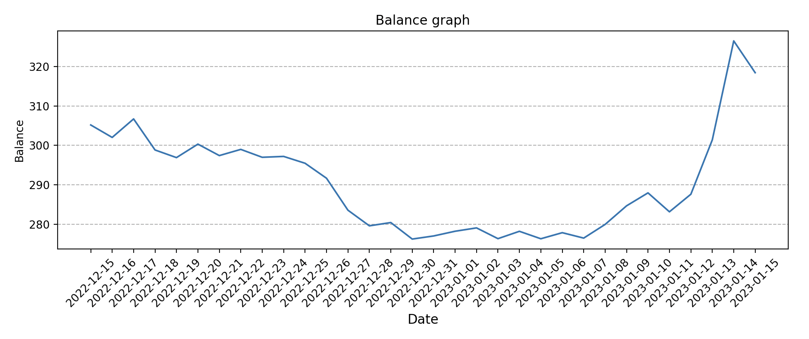

我的加密货币交易机器人
当然不是什么机器人，只是一个简单的脚本。不过值得一说的是，它确实能带来收益。
目前运行了 10 天左右，收益约 5%，在我看来已经是很好的结果，比自己操作要靠谱很多，反正我手动炒币只有亏钱的份。
如果本金是 $100，那么按照 5% 的收益率，一个月可以赚 $15，至少能把开服务器的钱挣回来。能平衡开支也是一件值得开心的事情。
换个角度想，10 天 5%，一个月 15%，一年 150% ……这收益率简直逆天。这还只是用 spot 交易，如果加上杠杆，收益会高很多。
经过最近几天的运行调试，解决了一些常见的错误情况，程序已经基本上稳定了。
原理
https://www.bi123.co/ 这个网站提供了各种加密货币的信号，会在整点的时候，通过邮件发送过去，某一种加密货币是看涨还是看跌。经过很长时间的人为观察，这个信号挺准的，至少在大方向上没有错。
那么脚本在收到邮件后，就根据信号，自动在 Binance 上进行交易。Binance 提供了完善的 API。
脚本会实时推动消息到 Telegram 的机器人，方便查看和关注交易结果。
收益分析
在一个价格波动的周期中，如果能做到低点买、高点卖，那么每一个上升的波段都是收益。无所谓价格最终有没有变高，只要有波动，就能有收益。
bi123 的信号是整点发的，也许会感觉不及时，会错过收益的机会或者带来更大的损失，不过以至少一个小时为周期，也可以防止太小幅度的波动，带来不必要的买卖。
由于各种加密货币的价格涨跌不一致，脚本支持配置多种不同的加密货币，随个人喜好选择。
代码
也没什么技术含量，代码在这里：smallyunet/txbot
2023.01.12
现在已经过去了一个多月的时间，来总结一下我实际的使用情况和结论。
首先是由于犯了很多错误，导致我最近一个月的余额是亏损的，大概亏损 3% 左右。一开始我没有留意，信号是分级别的，有 1 小时级别、4 小时级别、1 天的级别。不同的级别对市场的响应速度不一样。bi123.co 的 “信号趋势” 这个种类的信号，原理是对比收盘价，比如现在的价格是 1500 美元， 4 个小时之前是 1300 美元，那么就发出看涨的信号，就这么简单，就这么暴力。所以不同级别强度的信号，差异很大。一般来说，不推荐使用 1 小时的信号，我也确实在使用 1 小时信号的情况下，亏损率比较高。后来换成 4小时级别的信号，效果好多了。我推荐用 4 小时的信号。
再一个是信号种类。bi123.co 提供了 “信号趋势”、“RSI 背离”、“MD5 短线”、“多空头排列” 等多种信号，我之前只用了 “信号趋势” 一种，比较容易导致对市场的反应不及时。我推荐所有种类的信号一起用。
现在交易机器人脚本是支持配置使用，不同级别的信号强度以及信号种类的，默认配置是我感觉比较好的一种配置。
再看机器人的效果，目前机器人是无法逆市场而为的，也就是说很难在熊市的情况下获利，因为目前机器人只支持 spot 交易，没有添加做空或者倍率的交易方式，后期可以考虑加入。而且机器人会在市场短期震荡的情况下，发生亏损，也就是横盘的情况，机器人不但无法获利，而且会有少量亏损。从这个角度看，机器人似乎很肋助。
但机器人也不是毫无用处，机器人可以帮助你顺应市场，在跌的时候及时卖出，涨的时候及时买入，而不至于发生，跌的时候继续持有、涨的时候没有买入等情况。而这些操作都不需要手动完成，你甚至不需要关心这笔资产的情况，一切都会自动发生，它可以帮助你，不错过任何时候市场的机会。市场下跌及时止损，市场上涨及时跟进，就是这样。
机器人的另一个用处是，支持多币种的配置，可以让你不错过某个币种疯狂上涨的获利机会。市场上经常出现，某一个币种逆势上涨的情况，其他币都没怎么动，某个币拉疯了。如果是手动操作资产，很难不错过这样的机会，但如果是机器人自动批量操作，似乎很容易，也很自然而然可以抓住这样的机会。
2023.01.15
短短两天，市场疯涨，机器人的表现也符合预期，市场拉升，机器人会自动买入，及时跟上收益。这是最近一整个月，在机器人的控制下，我的资产变动情况（纵坐标的单位不重要）：
在一段时间的实践之后，我仍然推荐使用这样的机器人。
2023.03.16
经过最近一段时间对机器人的试用，我决定放弃并停止使用这样的机器人。我一共标的了 56 种加密货币，接受它们的信号，并且根据信号自动进行交易，这是最近一个月的资产变动情况：

也许是标的货币的种类太多，导致单种货币投入的金额太小，又或者是其他什么原因，总之由于机器人实际效果的不理想，以及现在我对炒币这件事情的不认可，不再推荐使用这样的机器人。